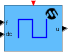

<< x2c_SVM_MCHP
MCHP
X2C MCHP Library
>>
MCHP
> x2c_SquareGen
x2c_SquareGen
X2C Square Wave Generator

Description
Generation of a square wave with amplitude (A) and frequency (f).
Inports
f:
Frequency
dc:
Duty Cycle
Outports
u:
Square wave output
Mask Parameters
fmax:
Maximum Frequency in Hz
LL:
Output Low Level
LH:
Output High Level
ts_fact:
Multiplication factor of base sampling time (in integer format).
Implementations
FiP16:
16 Bit Fixed Point
FiP32:
32 Bit Fixed Point
Float32:
32 Bit Floating Point
Float64:
64 Bit Floating Point
Report an issue
<< x2c_SVM_MCHP
MCHP